Данный материал может показаться сложным для понимания. Рекомендуется изучать его маленькими частями.
Предварительные навыки Содержание урока- Определение и свойства
- Строгие и нестрогие неравенства
- Двойное неравенство
- Неравенство с переменной
- Как решать неравенства
- Числовые промежутки
- Изображение числовых промежутков на координатной прямой
- Примеры решения неравенств
- Когда решений нет
- Когда решений бесконечно много
- Задания для самостоятельного решения
Определения и свойства
Неравенством мы будем называть два числовых или буквенных выражения, соединенных знаками >, <, ≥, ≤ или ≠.
Пример: 5 > 3
Данное неравенство говорит о том, что число 5 больше, чем число 3. Острый угол знака неравенства должен быть направлен в сторону меньшего числа. Это неравенство является верным, поскольку 5 больше, чем 3.
Если на левую чашу весов положить арбуз массой 5 кг, а на правую — арбуз массой 3 кг, то левая чаша перевесит правую, и экран весов покажет, что левая чаша тяжелее правой:
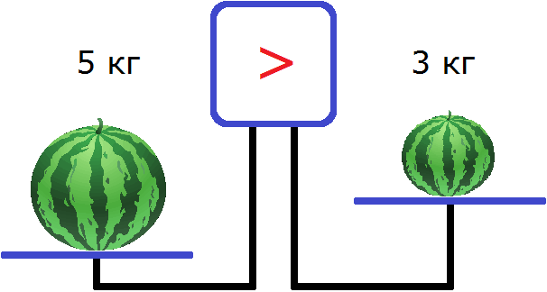
Если 5 > 3, то 3 < 5. То есть левую и правую часть неравенства можно поменять местами, изменив знак неравенства на противоположный. В ситуации с весами: большой арбуз можно положить на правую чашу, а маленький арбуз на левую. Тогда правая чаша перевесит левую, и экран покажет знак <
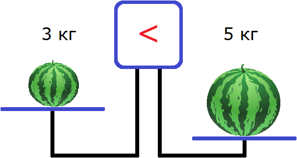
Если в неравенстве 5 > 3, не трогая левую и правую часть, поменять знак на <, то получится неравенство 5 < 3. Это неравенство не является верным, поскольку число 3 не может быть больше числа 5.
Числа, которые располагаются в левой и правой части неравенства, будем называть членами этого неравенства. Например, в неравенстве 5 > 3 членами являются числа 5 и 3.
Рассмотрим некоторые важные свойства для неравенства 5 > 3.
В будущем эти свойства будут работать и для других неравенств.
Свойство 1.
Если к левой и правой части неравенства 5 > 3 прибавить или вычесть одно и то же число, то знак неравенства не изменится.
Например, прибавим к обеим частям неравенства число 4. Тогда получим:
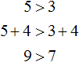
Видим, что левая часть по-прежнему больше правой.
Теперь попробуем вычесть из обеих частей неравенства 5 > 3 какое-нибудь число, скажем число 2
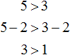
Видим, что левая часть по-прежнему больше правой.
Из данного свойства следует, что любой член неравенства можно перенести из одной части в другую часть, изменив знак этого члена. Знак неравенства при этом не изменится.
Например, перенесём в неравенстве 5 > 3, член 5 из левой части в правую часть, изменив знак этого члена. После переноса члена 5 в правую часть, в левой части ничего не останется, поэтому запишем там 0
\[0 > 3 - 5\]
\[0 > -2\]
Видим, что левая часть по-прежнему больше правой.
Свойство 2.
Если обе части неравенства умножить или разделить на одно и то же положительное число, то знак неравенства не изменится.
Например, умножим обе части неравенства 5 > 3 на какое-нибудь положительное число, скажем на число 2. Тогда получим:
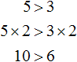
Видим, что левая часть по-прежнему больше правой.
Теперь попробуем разделить обе части неравенства 5 > 3 на какое-нибудь число. Разделим их на 2
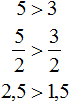
Видим, что левая часть по-прежнему больше правой.
Свойство 3.
Если обе части неравенства умножить или разделить на одно и то же отрицательное число, то знак неравенства изменится на противоположный.
Например, умножим обе части неравенства 5 > 3 на какое-нибудь отрицательное число, скажем на число −2. Тогда получим:
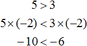
Видим, что левая часть стала меньше правой. То есть знак неравенства изменился на противоположный.
Теперь попробуем разделить обе части неравенства 5 > 3 на какое-нибудь отрицательное число. Давайте разделим их на −1
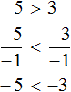
Видим, что левая часть стала меньше правой. То есть знак неравенства изменился на противоположный.
Само по себе неравенство можно понимать, как некоторое условие. Если условие выполняется, то неравенство является верным. И наоборот, если условие не выполняется, то неравенство не верно.
Например, чтобы ответить на вопрос является ли верным неравенство 7 > 3, нужно проверить выполняется ли условие «больше ли 7, чем 3». Мы знаем, что число 7 больше, чем число 3. То есть условие выполнено, а значит и неравенство 7 > 3 верно.
Неравенство 8 < 6 не является верным, поскольку не выполняется условие «8 меньше, чем 6».
Другим способом определения верности неравенства является составление разности из левой и правой части данного неравенства. Если разность положительна, то левая часть больше правой части. И наоборот, если разность отрицательна, то левая часть меньше правой части. Более точно это правило выглядит следующим образом:
Число a больше числа b, если разность a − b положительна. Число a меньше числа b, если разность a − b отрицательна.
Например, мы выяснили, что неравенство 7 > 3 является верным, поскольку число 7 больше, чем число 3. Докажем это с помощью правила, приведённого выше.
Составим разность из членов 7 и 3. Тогда получим 7 − 3 = 4. Согласно правилу, число 7 будет больше числа 3, если разность 7 − 3 окажется положительной. У нас она равна 4, то есть разность положительна. А значит число 7 больше числа 3.
Проверим с помощью разности верно ли неравенство 3 < 4. Составим разность, получим 3 − 4 = −1. Согласно правилу, число 3 будет меньше числа 4, если разность 3 − 4 окажется отрицательной. У нас она равна −1, то есть разность отрицательна. А значит число 3 меньше числа 4.
Проверим верно ли неравенство 5 > 8. Составим разность, получим 5 − 8 = −3. Согласно правилу, число 5 будет больше числа 8, если разность 5 − 8 окажется положительной. У нас разность равна −3, то есть она не является положительной. А значит число 5 не больше числа 8. Иными словами, неравенство 5 > 8 не является верным.
Строгие и нестрогие неравенства
Неравенства, содержащие знаки >, < называют строгими. А неравенства, содержащие знаки ≥, ≤ называют нестрогими.
Примеры строгих неравенства мы рассматривали ранее. Таковыми являются неравенства 5 > 3, 7 < 9.
Нестрогим, например, является неравенство 2 ≤ 5. Данное неравенство читают следующим образом: «2 меньше или равно 5».
Запись 2 ≤ 5 является неполной. Полная запись этого неравенства выглядит следующим образом:
2 < 5 или 2 = 5
Тогда становится очевидным, что неравенство 2 ≤ 5 состоит из двух условий: «два меньше пять» и «два равно пять».
Нестрогое неравенство верно в том случае, если выполняется хотя бы одно из его условий. В нашем примере верным является условие «2 меньше 5». Значит и само неравенство 2 ≤ 5 верно.
Пример 2. Неравенство 2 ≤ 2 является верным, поскольку выполняется одно из его условий, а именно 2 = 2.
Пример 3. Неравенство 5 ≤ 2 не является верным, поскольку не выполняется ни одно из его условий: ни 5 < 2 ни 5 = 2.
Двойное неравенство
Число 3 больше, чем число 2 и меньше, чем число 4. В виде неравенства это высказывание можно записать так: 2 < 3 < 4. Такое неравенство называют двойным.
Двойное неравенство может содержать знаки нестрогих неравенств. К примеру, если число 5 больше или равно, чем число 2, и меньше или равно, чем число 7, то можно записать, что 2 ≤ 5 ≤ 7
Чтобы правильно записать двойное неравенство, сначала записывают член находящийся в середине, затем член находящийся слева, затем член находящийся справа.
Например, запишем, что число 6 больше, чем число 4, и меньше, чем число 9.
Сначала записываем 6
Слева записываем, что это число больше, чем число 4
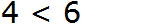
Справа записываем, что число 6 меньше, чем число 9
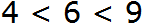
Неравенство с переменной
Неравенство, как и равенство может содержать переменную.
Например, неравенство x > 2 содержит переменную x. Обычно такое неравенство нужно решить, то есть выяснить при каких значениях x данное неравенство становится верным.
Решить неравенство означает найти такие значения переменной x, при которых данное неравенство становится верным.
Значение переменной, при котором неравенство становится верным, называется решением неравенства.
Неравенство x > 2 становится верным при x = 3, x = 4, x = 5, x = 6 и так далее до бесконечности. Видим, что это неравенство имеет не одно решение, а множество решений.
Другими словами, решением неравенства x > 2 является множество всех чисел, бóльших 2. При этих числах неравенство будет верным. Примеры:
\[3 > 2\]
\[4 > 2\]
\[5 > 2\]
Число 2, располагающееся в правой части неравенства x > 2, будем называть границей данного неравенства. В зависимости от знака неравенства, граница может принадлежать множеству решений неравенства либо не принадлежать ему.
В нашем примере граница неравенства не принадлежит множеству решений, поскольку при подстановке числа 2 в неравенство x > 2 получается не верное неравенство 2 > 2. Число 2 не может быть больше самого себя, поскольку оно равно самому себе (2 = 2).
Неравенство x > 2 является строгим. Его можно прочитать так: «x строго больше 2″. То есть все значения, принимаемые переменной x должны быть строго больше 2. В противном случае, неравенство верным не будет.
Если бы нам было дано нестрогое неравенство x ≥ 2, то решениями данного неравенства были бы все числа, которые больше 2, в том числе и само число 2. В этом неравенстве граница 2 принадлежит множеству решений неравенства, поскольку при подстановке числа 2 в неравенство x ≥ 2 получается верное неравенство 2 ≥ 2. Ранее было сказано, что нестрогое неравенство является верным, если выполняется хотя бы одно из его условий. В неравенстве 2 ≥ 2 выполняется условие 2 = 2, поэтому и само неравенство 2 ≥ 2 верно.
Как решать неравенства
Процесс решения неравенств во многом схож с процессом решения уравнений. При решении неравенств мы будем применять свойства, которые изучили вначале данного урока, такие как: перенос слагаемых из одной части неравенства в другую часть, меняя знак; умножение (или деление) обеих частей неравенства на одно и то же число.
Эти свойства позволяют получить неравенство, которое равносильно исходному. Равносильными называют неравенства, решения которых совпадают.
Решая уравнения мы выполняли тождественные преобразования до тех пор, пока в левой части уравнения не оставалась переменная, а в правой части значение этой переменной (например: x = 2, x = 5). Иными словами, заменяли исходное уравнение на равносильное ему уравнение до тех пор, пока не получалось уравнение вида x = a, где a значение переменной x. В зависимости от уравнения, корней могло быть один, два, бесконечное множество, либо не быть совсем.
А при решении неравенств мы будем заменять исходное неравенство на равносильное ему неравенство до тех пор, пока в левой части не останется переменная этого неравенства, а в правой части его граница.
Пример 1. Решить неравенство 2x > 6
Итак, нужно найти такие значения x, при подстановке которых в 2x > 6 получится верное неравенство.
Вначале данного урока было сказано, что если обе части неравенства разделить на какое-нибудь положительное число, то знак неравенства не изменится. Если применить это свойство к неравенству, содержащему переменную, то получится неравенство равносильное исходному.
В нашем случае, если мы разделим обе части неравенства 2x > 6 на какое-нибудь положительное число, то получится неравенство, которое равносильно исходному неравенству 2x > 6.
Итак, разделим обе части неравенства на 2.
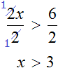
В левой части осталась переменная x, а правая часть стала равна 3. Получилось равносильное неравенство x > 3. На этом решение завершается, поскольку в левой части осталась переменная, а в правой части граница неравенства.
Теперь можно сделать вывод, что решениями неравенства x > 3 являются все числа, которые больше 3. Например, числа 4, 5, 6, 7 и так далее до бесконечности. При этих значениях неравенство x > 3 будет верным:
\[4 > 3\]
\[5 > 3\]
\[6 > 3\]
\[7 > 3\]
Отметим, что неравенство x > 3 является строгим. «Переменная x строго больше трёх».
А поскольку неравенство x > 3 равносильно исходному неравенству 2x > 6, то их решения будут совпадать. Иначе говоря, значения, которые подходят неравенству x > 3, будут подходить и неравенству 2x > 6. Покажем это.
Возьмём, например, число 5 и подставим его сначала в полученное нами равносильное неравенство x > 3, а потом в исходное 2x > 6.
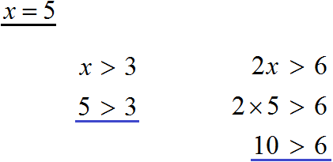
Видим, что в обоих случаях получается верное неравенство.
После того, как неравенство решено, ответ нужно записать в виде так называемого числового промежутка следующим образом:
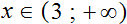
В этом выражении говорится, что значения, принимаемые переменной x, принадлежат числовому промежутку от трёх до плюс бесконечности.
Иначе говоря, все числа, начиная от трёх до плюс бесконечности являются решениями неравенства x > 3. Знак ∞ в математике означает бесконечность.
Учитывая, что понятие числового промежутка очень важно, остановимся на нём подробнее.
Числовые промежутки
Числовым промежутком называют множество чисел на координатной прямой, которое может быть описано с помощью неравенства.
Допустим, мы хотим изобразить на координатной прямой множество чисел от 2 до 8. Для этого сначала на координатной прямой отмечаем точки с координатами 2 и 8, а затем выделяем штрихами ту область, которая располагается между координатами 2 и 8. Эти штрихи будут играть роль чисел, располагающихся между числами 2 и 8
Числа 2 и 8 назовём границами числового промежутка. Рисуя числовой промежуток, точки для его границ изображают не в виде точек как таковых, а в виде кружков, которые можно разглядеть.
Границы могут принадлежать числовому промежутку либо не принадлежать ему.
Если границы не принадлежат числовому промежутку, то они изображаются на координатной прямой в виде пустых кружков.
Если границы принадлежат числовому промежутку, то кружки необходимо закрасить.
На нашем рисунке кружки были оставлены пустыми. Это означало, что границы 2 и 8 не принадлежат числовому промежутку. Значит в наш числовой промежуток будут входить все числа от 2 до 8, кроме чисел 2 и 8.
Если мы хотим включить границы 2 и 8 в числовой промежуток, то кружки необходимо закрасить:
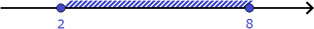
В данном случае в числовой промежуток будут входить все числа от 2 до 8, включая числа 2 и 8.
На письме числовой промежуток обозначается указанием его границ с помощью круглых или квадратных скобок.
Если границы не принадлежат числовому промежутку, то границы обрамляются круглыми скобками.
Если границы принадлежат числовому промежутку, то границы обрамляются квадратными скобками.
На рисунке представлено два числовых промежутка от 2 до 8 с соответствующими обозначениями:
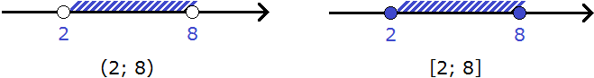
На первом рисунке числовой промежуток обозначен с помощью круглых скобок, поскольку границы 2 и 8 не принадлежат этому числовому промежутку.
На втором рисунке числовой промежуток обозначен с помощью квадратных скобок, поскольку границы 2 и 8 принадлежат этому числовому промежутку.
С помощью числовых промежутков можно записывать ответы к неравенствам. Например, ответ к двойному неравенству 2 ≤ x ≤ 8 записывается так:
x ∈ [ 2 ; 8 ]
То есть сначала записывают переменную, входящую в неравенство, затем с помощью знака принадлежности ∈ указывают к какому числовому промежутку принадлежат значения этой переменной. В данном случае выражение x ∈ [ 2 ; 8 ] указывает на то, что переменная x, входящая в неравенство 2 ≤ x ≤ 8, принимает все значения в промежутке от 2 до 8 включительно. При этих значениях неравенство будет верным.
Обратим внимание на то, что ответ записан с помощью квадратных скобок, поскольку границы неравенства 2 ≤ x ≤ 8, а именно числа 2 и 8 принадлежат множеству решений этого неравенства.
Множество решений неравенства 2 ≤ x ≤ 8 также можно изобразить с помощью координатной прямой:
Здесь границы числового промежутка 2 и 8 соответствуют границам неравенства 2 ≤ x ≤ 8, а выделенная штрихами область соответствует множеству значений x, которые являются решениями неравенства 2 ≤ x ≤ 8.
В некоторых источниках границы, которые не принадлежат числовому промежутку, называют открытыми.
Открытыми их называют по той причине, что числовой промежуток остаётся открытым из-за того, что его границы не принадлежат этому числовому промежутку. Пустой кружок на координатной прямой математики называют выколотой точкой. Выколоть точку значит исключить её из числового промежутка или из множества решений неравенства.
А в случае, когда границы принадлежат числовому промежутку, их называют закрытыми (или замкнутыми), поскольку такие границы закрывают (замыкают) собой числовой промежуток. Закрашенный кружок на координатной прямой также говорит о закрытости границ.
Существуют разновидности числовых промежутков. Рассмотрим каждый из них.
Числовой луч
Числовым лучом называют числовой промежуток, который задаётся неравенством x ≥ a, где a — граница данного неравенства, x — решение неравенства.
Пусть a = 3. Тогда неравенство x ≥ a примет вид x ≥ 3. Решениями данного неравенства являются все числа, которые больше 3, включая само число 3.
Изобразим числовой луч, заданный неравенством x ≥ 3, на координатной прямой. Для этого отметим на ней точку с координатой 3, а всю оставшуюся справа от неё область выделим штрихами. Выделяется именно правая часть, поскольку решениями неравенства x ≥ 3 являются числа, бóльшие 3. А бóльшие числа на координатной прямой располагаются правее
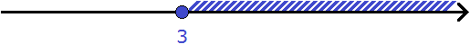
Здесь точка 3 соответствует границе неравенства x ≥ 3, а выделенная штрихами область соответствует множеству значений x, которые являются решениями неравенства x ≥ 3.
Точка 3, являющаяся границей числового луча, изображена в виде закрашенного кружка, поскольку граница неравенства x ≥ 3 принадлежит множеству его решений.
На письме числовой луч, заданный неравенством x ≥ a, обозначается следующим образом:
[ a ; +∞ )
Видно, что с одной стороны граница обрамлена квадратной скобкой, а с другой круглой. Это связано с тем, что одна граница числового луча принадлежит ему, а другая нет, поскольку бесконечность сама по себе границ не имеет и подразумевается, что по ту сторону нет числа, замыкающего этот числовой луч.
Учитывая то, что одна из границ числового луча закрыта, данный промежуток часто называют закрытым числовым лучом.
Запишем ответ к неравенству x ≥ 3 с помощью обозначения числового луча. У нас переменная a равна 3
x ∈ [ 3 ; +∞ )
В этом выражении говорится, что переменная x, входящая в неравенство x ≥ 3, принимает все значения от 3 до плюс бесконечности.
Иначе говоря, все числа от 3 до плюс бесконечности, являются решениями неравенства x ≥ 3. Граница 3 принадлежит множеству решений, поскольку неравенство x ≥ 3 является нестрогим.
Закрытым числовым лучом также называют числовой промежуток, который задаётся неравенством x ≤ a. Решениями неравенства x ≤ a являются все числа, которые меньше a, включая само число a.
К примеру, если a = 2, то неравенство примет вид x ≤ 2. На координатной прямой граница 2 будет изображаться закрашенным кружком, а вся область, находящаяся слева, будет выделена штрихами. В этот раз выделяется левая часть, поскольку решениями неравенства x ≤ 2 являются числа, меньшие 2. А меньшие числа на координатной прямой располагаются левее
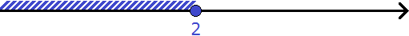
Здесь точка 2 соответствует границе неравенства x ≤ 2, а выделенная штрихами область соответствует множеству значений x, которые являются решениями неравенства x ≤ 2.
Точка 2, являющаяся границей числового луча, изображена в виде закрашенного кружка, поскольку граница неравенства x ≤ 2 принадлежит множеству его решений.
Запишем ответ к неравенству x ≤ 2 с помощью обозначения числового луча:
x ∈ ( −∞ ; 2 ]
В этом выражении говорится, что все числа от минус бесконечности до 2, являются решениями неравенства x ≤ 2. Граница 2 принадлежит множеству решений, поскольку неравенство x ≤ 2 является нестрогим.
Открытый числовой луч
Открытым числовым лучом называют числовой промежуток, который задаётся неравенством x > a, где a — граница данного неравенства, x — решение неравенства.
Открытый числовой луч во многом похож на закрытый числовой луч. Различие в том, что граница a не принадлежит промежутку, как и граница неравенства x > a не принадлежит множеству его решений.
Пусть a = 3. Тогда неравенство примет вид x > 3. Решениями данного неравенства являются все числа, которые больше 3, за исключением числа 3
На координатной прямой граница открытого числового луча, заданного неравенством x > 3, будет изображаться в виде пустого кружка. Вся область, находящаяся справа, будет выделена штрихами:
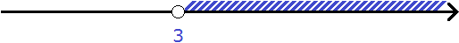
Здесь точка 3 соответствует границе неравенства x > 3, а выделенная штрихами область соответствует множеству значений x, которые являются решениями неравенства x > 3. Точка 3, являющаяся границей открытого числового луча, изображена в виде пустого кружка, поскольку граница неравенства x > 3 не принадлежит множеству его решений.
На письме открытый числовой луч, заданный неравенством x > a, обозначается следующим образом:
( a ; +∞ )
Круглые скобки указывают на то, что границы открытого числового луча не принадлежат ему.
Запишем ответ к неравенству x > 3 с помощью обозначения открытого числового луча:
x ∈ ( 3 ; +∞ )
В этом выражении говорится, что все числа от 3 до плюс бесконечности, являются решениями неравенства x > 3. Граница 3 не принадлежит множеству решений, поскольку неравенство x > 3 является строгим.
Открытым числовым лучом также называют числовой промежуток, который задаётся неравенством x < a, где a — граница данного неравенства, x — решение неравенства. Решениями неравенства x < a являются все числа, которые меньше a, исключая число a.
К примеру, если a = 2, то неравенство примет вид x < 2. На координатной прямой граница 2 будет изображаться пустым кружком, а вся область, находящаяся слева, будет выделена штрихами:
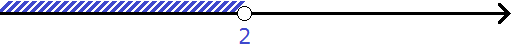
Здесь точка 2 соответствует границе неравенства x < 2, а выделенная штрихами область соответствует множеству значений x, которые являются решениями неравенства x < 2. Точка 2, являющаяся границей открытого числового луча, изображена в виде пустого кружка, поскольку граница неравенства x < 2 не принадлежит множеству его решений.
На письме открытый числовой луч, заданный неравенством x < a, обозначается следующим образом:
( −∞ ; a )
Запишем ответ к неравенству x < 2 с помощью обозначения открытого числового луча:
x ∈ ( −∞ ; 2 )
В этом выражении говорится, что все числа от минус бесконечности до 2, являются решениями неравенства x < 2. Граница 2 не принадлежит множеству решений, поскольку неравенство x < 2 является строгим.
Отрезок
Отрезком называют числовой промежуток, который задаётся двойным неравенством a ≤ x ≤ b, где a и b — границы данного неравенства, x — решение неравенства.
Пусть a = 2, b = 8. Тогда неравенство a ≤ x ≤ b примет вид 2 ≤ x ≤ 8. Решениями неравенства 2 ≤ x ≤ 8 являются все числа, которые больше 2 и меньше 8. При этом границы неравенства 2 и 8 принадлежат множеству его решений, поскольку неравенство 2 ≤ x ≤ 8 является нестрогим.
Изобразим отрезок, заданный двойным неравенством 2 ≤ x ≤ 8 на координатной прямой. Для этого отметим на ней точки с координатами 2 и 8, а располагающуюся между ними область выделим штрихами:
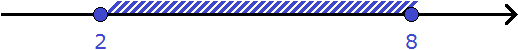
Здесь точки 2 и 8 соответствуют границам неравенства 2 ≤ x ≤ 8, а выделенная штрихами область соответствует множеству значений x, которые являются решениями неравенства 2 ≤ x ≤ 8. Точки 2 и 8, являющиеся границами отрезка, изображены в виде закрашенных кружков, поскольку границы неравенства 2 ≤ x ≤ 8 принадлежат множеству его решений.
На письме отрезок, заданный неравенством a ≤ x ≤ b обозначается следующим образом:
[ a ; b ]
Квадратные скобки с обеих сторон указывают на то, что границы отрезка принадлежат ему. Запишем ответ к неравенству 2 ≤ x ≤ 8 с помощью этого обозначения:
x ∈ [ 2 ; 8 ]
В этом выражении говорится, что все числа от 2 до 8 включительно, являются решениями неравенства 2 ≤ x ≤ 8.
Интервал
Интервалом называют числовой промежуток, который задаётся двойным неравенством a < x < b, где a и b — границы данного неравенства, x — решение неравенства.
Пусть a = 2, b = 8. Тогда неравенство a < x < b примет вид 2 < x < 8. Решениями этого двойного неравенства являются все числа, которые больше 2 и меньше 8, исключая числа 2 и 8.
Изобразим интервал на координатной прямой:
Здесь точки 2 и 8 соответствуют границам неравенства 2 < x < 8, а выделенная штрихами область соответствует множеству значений x, которые являются решениями неравенства 2 < x < 8. Точки 2 и 8, являющиеся границами интервала, изображены в виде пустых кружков, поскольку границы неравенства 2 < x < 8 не принадлежат множеству его решений.
На письме интервал, заданный неравенством a < x < b, обозначается следующим образом:
( a ; b )
Круглые скобки с обеих сторон указывают на то, что границы интервала не принадлежат ему. Запишем ответ к неравенству 2 < x < 8 с помощью этого обозначения:
x ∈ ( 2 ; 8 )
В этом выражении говорится, что все числа от 2 до 8, исключая числа 2 и 8, являются решениями неравенства 2 < x < 8.
Полуинтервал
Полуинтервалом называют числовой промежуток, который задаётся неравенством a ≤ x < b, где a и b — границы данного неравенства, x — решение неравенства.
Полуинтервалом также называют числовой промежуток, который задаётся неравенством a < x ≤ b.
Одна из границ полуинтервала принадлежит ему. Отсюда и название этого числового промежутка.
В ситуации с полуинтервалом a ≤ x < b ему (полуинтервалу) принадлежит левая граница.
А в ситуации с полуинтервалом a < x ≤ b ему принадлежит правая граница.
Пусть a = 2, b = 8. Тогда неравенство a ≤ x < b примет вид 2 ≤ x < 8. Решениями этого двойного неравенства являются все числа, которые больше 2 и меньше 8, включая число 2, но исключая число 8.
Изобразим полуинтервал 2 ≤ x < 8 на координатной прямой:
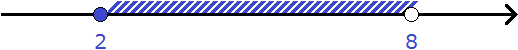
Здесь точки 2 и 8 соответствуют границам неравенства 2 ≤ x < 8, а выделенная штрихами область соответствует множеству значений x, которые являются решениями неравенства 2 ≤ x < 8.
Точка 2, являющаяся левой границей полуинтервала, изображена в виде закрашенного кружка, поскольку левая граница неравенства 2 ≤ x < 8 принадлежит множеству его решений.
А точка 8, являющаяся правой границей полуинтервала, изображена в виде пустого кружка, поскольку правая граница неравенства 2 ≤ x < 8 не принадлежит множеству его решений.
На письме полуинтервал, заданный неравенством a ≤ x < b, обозначается следующим образом:
[ a ; b )
Видно, что с одной стороны граница обрамлена квадратной скобкой, а с другой круглой. Это связано с тем, что одна граница полуинтервала принадлежит ему, а другая нет. Запишем ответ к неравенству 2 ≤ x < 8 с помощью этого обозначения:
x ∈ [ 2 ; 8 )
В этом выражении говорится, что все числа от 2 до 8, включая число 2, но исключая число 8, являются решениями неравенства 2 ≤ x < 8.
Аналогично на координатной прямой можно изобразить полуинтервал, заданный неравенством a < x ≤ b. Пусть a = 2, b = 8. Тогда неравенство a < x ≤ b примет вид 2 < x ≤ 8. Решениями этого двойного неравенства являются все числа, которые больше 2 и меньше 8, исключая число 2, но включая число 8.
Изобразим полуинтервал 2 < x ≤ 8 на координатной прямой:
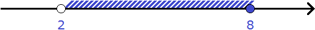
Здесь точки 2 и 8 соответствуют границам неравенства 2 < x ≤ 8, а выделенная штрихами область соответствует множеству значений x, которые являются решениями неравенства 2 < x ≤ 8.
Точка 2, являющаяся левой границей полуинтервала, изображена в виде пустого кружка, поскольку левая граница неравенства 2 < x ≤ 8 не принадлежит множеству его решений.
А точка 8, являющаяся правой границей полуинтервала, изображена в виде закрашенного кружка, поскольку правая граница неравенства 2 < x ≤ 8 принадлежит множеству его решений.
На письме полуинтервал, заданный неравенством a < x ≤ b, обозначается так: ( a ; b ]. Запишем ответ к неравенству 2 < x ≤ 8 с помощью этого обозначения:
x ∈ ( 2 ; 8 ]
В этом выражении говорится, что все числа от 2 до 8, исключая число 2, но включая число 8, являются решениями неравенства 2 < x ≤ 8.
Изображение числовых промежутков на координатной прямой
Числовой промежуток может быть задан с помощью неравенства или с помощью обозначения (круглых или квадратных скобок). В обоих случаях нужно суметь изобразить этот числовой промежуток на координатной прямой. Рассмотрим несколько примеров.
Пример 1. Изобразить числовой промежуток, заданный неравенством x > 5
Вспоминаем, что неравенством вида x > a задаётся открытый числовой луч. В данном случае переменная a равна 5. Неравенство x > 5 строгое, поэтому граница 5 будет изображаться в виде пустого кружкá. Нас интересуют все значения x, которые больше 5, поэтому вся область справа будет выделена штрихами:
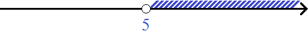
Пример 2. Изобразить числовой промежуток (5; +∞) на координатной прямой
Это тот же числовой промежуток, который мы изобразили в предыдущем примере. Но в этот раз он задан не с помощью неравенства, а с помощью обозначения числового промежутка.
Граница 5 обрамлена круглой скобкой, значит она не принадлежит промежутку. Соответственно, кружок остаётся пустым.
Символ +∞ указывает, что нас интересуют все числа, которые больше 5. Соответственно, вся область справа от границы 5 выделяется штрихами:
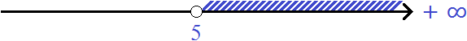
Пример 3. Изобразить числовой промежуток (−5; 1) на координатной прямой.
Круглыми скобками с обеих сторон обозначаются интервалы. Границы интервала не принадлежат ему, поэтому границы −5 и 1 будут изображаться на координатной прямой в виде пустых кружков. Вся область между ними будет выделена штрихами:
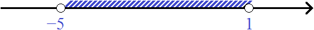
Пример 4. Изобразить числовой промежуток, заданный неравенством −5 < x < 1
Это тот же числовой промежуток, который мы изобразили в предыдущем примере. Но в этот раз он задан не с помощью обозначения промежутка, а с помощью двойного неравенства.
Неравенством вида a < x < b, задаётся интервал. В данном случае переменная a равна −5, а переменная b равна единице. Неравенство −5 < x < 1 строгое, поэтому границы −5 и 1 будут изображаться в виде пустых кружка. Нас интересуют все значения x, которые больше −5, но меньше единицы, поэтому вся область между точками −5 и 1 будет выделена штрихами:
Пример 5. Изобразить на координатной прямой числовые промежутки [−1; 2) и [2; 5]
В этот раз изобразим на координатной прямой сразу два промежутка. Промежуток [−1; 2) является полуинтервалом, промежуток [2; 5] — отрезком.
У полуинтервала [−1; 2) левая граница принадлежит ему, а правая нет.
А у отрезка [2; 5] обе границы принадлежат ему.
Чтобы хорошо увидеть промежутки [−1; 2) и [2; 5], первый можно изобразить на верхней области, а второй на нижней. Так и поступим:
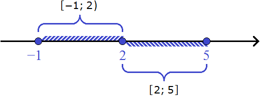
Граница 2 закрашена потому что она входит в промежуток [2; 5].
Пример 6. Изобразить на координатной прямой числовые промежутки [-1; 2) и (2; 5]
Квадратной скобкой с одной стороны и круглой с другой обозначаются полуинтервалы. Одна из границ полуинтервала принадлежат ему, а другая нет.
В случае с полуинтервалом [-1; 2) левая граница будет принадлежать ему, а правая нет. Значит левая граница будет изображаться в виде закрашенного кружка. Правая же граница будет изображаться в виде пустого кружка.
А в случае с полуинтервалом (2; 5] ему будет принадлежать только правая граница, а левая нет. Значит левая граница будет изображаться в виде пустого кружка. Правая же граница будет изображаться в виде закрашенного кружка.
Изобразим промежуток [-1; 2) на верхней области координатной прямой, а промежуток (2; 5] — на нижней:
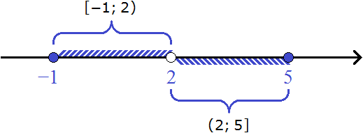
Примеры решения неравенств
Неравенство, которое путём тождественных преобразований можно привести к виду ax > b (или к виду ax < b), будем называть линейным неравенством с одной переменной.
В линейном неравенстве ax > b, x — это переменная, значения которой нужно найти, а — коэффициент этой переменной, b — граница неравенства, которая в зависимости от знака неравенства может принадлежать множеству его решений либо не принадлежать ему.
Например, неравенство 2x > 4 является неравенством вида ax > b. В нём роль переменной a играет число 2, роль переменной b (границы неравенства) играет число 4.
Неравенство 2x > 4 можно сделать ещё проще. Если мы разделим обе его части на 2, то получим неравенство x > 2
Получившееся неравенство x > 2 также является неравенством вида ax > b, то есть линейным неравенством с одной переменной. В этом неравенстве роль переменной a играет единица. Ранее мы говорили, что коэффициент 1 не записывают. Роль переменной b играет число 2.
Отталкиваясь от этих сведений, попробуем решить несколько простых неравенств. В ходе решения мы будем выполнять элементарные тождественные преобразования с целью получить неравенство вида ax > b
Пример 1. Решить неравенство x − 7 < 0
Прибавим к обеим частям неравенства число 7
\[x - 7 + 7 < 0 + 7\]
В левой части останется x, а правая часть станет равна 7
\[x < 7\]
Путём элементарных преобразований мы привели неравенство x − 7 < 0 к равносильному неравенству x < 7. Решениями неравенства x < 7 являются все числа, которые меньше 7. Граница 7 не принадлежит множеству решений, поскольку неравенство строгое.
Когда неравенство приведено к виду x < a (или x > a), его можно считать уже решённым. Наше неравенство x − 7 < 0 тоже приведено к такому виду, а именно к виду x < 7. Но в большинстве школ требуют, чтобы ответ был записан с помощью числового промежутка и проиллюстрирован на координатной прямой.
Запишем ответ с помощью числового промежутка. В данном случае ответом будет открытый числовой луч (вспоминаем, что числовой луч задаётся неравенством x < a и обозначается как ( −∞ ; a)
x ∈ ( −∞ ; 7 )
На координатной прямой граница 7 будет изображаться в виде пустого кружка, а вся область, находящаяся слева от границы, будет выделена штрихами:
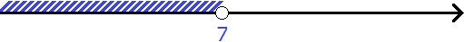
Для проверки возьмём любое число из промежутка ( −∞ ; 7 ) и подставим его в неравенство x < 7 вместо переменной x. Возьмём, например, число 2
\[2 < 7\]
Получилось верное числовое неравенство, значит и решение верное. Возьмём ещё какое-нибудь число, например, число 4
\[4 < 7\]
Получилось верное числовое неравенство. Значит решение верное.
А поскольку неравенство x < 7 равносильно исходному неравенству x − 7 < 0, то решения неравенства x < 7 будут совпадать с решениями неравенства x − 7 < 0. Подставим те же тестовые значения 2 и 4 в неравенство x − 7 < 0
\[2 - 7 < 0\]
−5 < 0 — Верное неравенство
\[4 - 7 < 0\]
−3 < 0 Верное неравенство
Пример 2. Решить неравенство −4x < −16
Разделим обе части неравенства на −4. Не забываем, что при делении обеих частей неравенства на отрицательное число, знак неравенства меняется на противоположный:
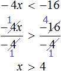
Мы привели неравенство −4x < −16 к равносильному неравенству x > 4. Решениями неравенства x > 4 будут все числа, которые больше 4. Граница 4 не принадлежит множеству решений, поскольку неравенство строгое.
Изобразим множество решений неравенства x > 4 на координатной прямой и запишем ответ в виде числового промежутка:
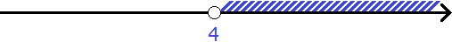
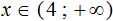
Пример 3. Решить неравенство 3y + 1 > 1 + 6y
Перенесём 6y из правой части в левую часть, изменив знак. А 1 из левой части перенесем в правую часть, опять же изменив знак:
\[3y - 6y> 1 - 1\]
Приведём подобные слагаемые:
\[-3y > 0\]
Разделим обе части на −3. Не забываем, что при делении обеих частей неравенства на отрицательное число, знак неравенства меняется на противоположный:
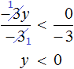
Решениями неравенства y < 0 являются все числа, меньшие нуля. Изобразим множество решений неравенства y < 0 на координатной прямой и запишем ответ в виде числового промежутка:
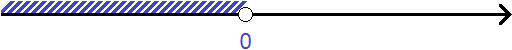
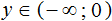
Пример 4. Решить неравенство 5(x − 1) + 7 ≤ 1 − 3(x + 2)
Раскроем скобки в обеих частях неравенства:
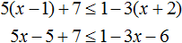
Перенесем −3x из правой части в левую часть, изменив знак. Члены −5 и 7 из левой части перенесем в правую часть, опять же изменив знаки:
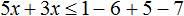
Приведем подобные слагаемые:
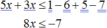
Разделим обе части получившегося неравенства на 8
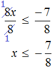
Решениями неравенства
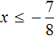
являются все числа, которые меньше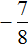
. Граница принадлежит множеству решений, поскольку неравенство является нестрогим.Изобразим множество решений неравенства на координатной прямой и запишем ответ в виде числового промежутка:
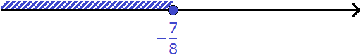
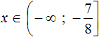
Пример 5. Решить неравенство
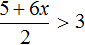
Умножим обе части неравенства на 2. Это позволит избавиться от дроби в левой части:
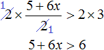
Теперь перенесем 5 из левой части в правую часть, изменив знак:
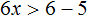
После приведения подобных слагаемых, получим неравенство 6x > 1. Разделим обе части этого неравенства на 6. Тогда получим:
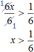
Решениями неравенства
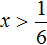
являются все числа, которые больше \(\frac{1}{6}\). Граница \(\frac{1}{6}\) не принадлежит множеству решений, поскольку неравенство является строгим.Изобразим множество решений неравенства на координатной прямой и запишем ответ в виде числового промежутка:
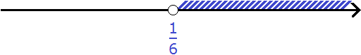
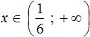
Пример 6. Решить неравенство
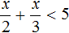
Умножим обе части на 6
После приведения подобных слагаемых, получим неравенство 5x < 30. Разделим обе части этого неравенства на 5
Решениями неравенства x < 6 являются все числа, которые меньше 6. Граница 6 не принадлежит множеству решений, поскольку неравенство является x < 6 строгим.
Изобразим множество решений неравенства x < 6 на координатной прямой и запишем ответ в виде числового промежутка:
Пример 7. Решить неравенство
Умножим обе части неравенства на 10
В получившемся неравенстве раскроем скобки в левой части:
Перенесем члены без x в правую часть
Приведем подобные слагаемые в обеих частях:
Разделим обе части получившегося неравенства на 10
Решениями неравенства x ≤ 3,5 являются все числа, которые меньше 3,5. Граница 3,5 принадлежит множеству решений, поскольку неравенство является x ≤ 3,5 нестрогим.
Изобразим множество решений неравенства x ≤ 3,5 на координатной прямой и запишем ответ в виде числового промежутка:
Пример 8. Решить неравенство 4 < 4x < 20
Чтобы решить такое неравенство, нужно переменную x освободить от коэффициента 4. Тогда мы сможем сказать в каком промежутке находится решение данного неравенства.
Чтобы освободить переменную x от коэффициента, можно разделить член 4x на 4. Но правило в неравенствах таково, что если мы делим член неравенства на какое-нибудь число, то тоже самое надо сделать и с остальными членами, входящими в данное неравенство. В нашем случае на 4 нужно разделить все три члена неравенства 4 < 4x < 20
Решениями неравенства 1 < x < 5 являются все числа, которые больше 1 и меньше 5. Границы 1 и 5 не принадлежат множеству решений, поскольку неравенство 1 < x < 5 является строгим.
Изобразим множество решений неравенства 1 < x < 5 на координатной прямой и запишем ответ в виде числового промежутка:
Пример 9. Решить неравенство −1 ≤ −2x ≤ 0
Разделим все члены неравенства на −2
Получили неравенство 0,5 ≥ x ≥ 0. Двойное неравенство желательно записывать так, чтобы меньший член располагался слева, а больший справа. Поэтому перепишем наше неравенство следующим образом:
0 ≤ x ≤ 0,5
Решениями неравенства 0 ≤ x ≤ 0,5 являются все числа, которые больше 0 и меньше 0,5. Границы 0 и 0,5 принадлежат множеству решений, поскольку неравенство 0 ≤ x ≤ 0,5 является нестрогим.
Изобразим множество решений неравенства 0 ≤ x ≤ 0,5 на координатной прямой и запишем ответ в виде числового промежутка:
Пример 10. Решить неравенство
Умножим обе неравенства на 12
Раскроем скобки в получившемся неравенстве и приведем подобные слагаемые:
Разделим обе части получившегося неравенства на 2
Решениями неравенства x ≤ −0,5 являются все числа, которые меньше −0,5. Граница −0,5 принадлежит множеству решений, поскольку неравенство x ≤ −0,5 является нестрогим.
Изобразим множество решений неравенства x ≤ −0,5 на координатной прямой и запишем ответ в виде числового промежутка:
Пример 11. Решить неравенство
Умножим все части неравенства на 3
Теперь из каждой части получившегося неравенства вычтем 6
Каждую часть получившегося неравенства разделим на −1. Не забываем, что при делении всех частей неравенства на отрицательное число, знак неравенства меняется на противоположный:
Решениями неравенства 3 ≤ a ≤ 9 являются все числа, которые больше 3 и меньше 9. Границы 3 и 9 принадлежат множеству решений, поскольку неравенство 3 ≤ a ≤ 9 является нестрогим.
Изобразим множество решений неравенства 3 ≤ a ≤ 9 на координатной прямой и запишем ответ в виде числового промежутка:
Когда решений нет
Существуют неравенства, которые не имеют решений. Таковым, например, является неравенство 6x > 2(3x + 1). В процессе решения этого неравенства мы придём к тому, что знак неравенства > не оправдает своего местоположения. Давайте посмотрим, как это выглядит.
Раскроем скобки в правой части данного неравенство, получим 6x > 6x + 2. Перенесем 6x из правой части в левую часть, изменив знак, получим 6x − 6x > 2. Приводим подобные слагаемые и получаем неравенство 0 > 2, которое не является верным.
Для наилучшего понимания, перепишем приведение подобных слагаемых в левой части следующим образом:
Получили неравенство 0x > 2. В левой части располагается произведение, которое будет равно нулю при любом x. А ноль не может быть больше, чем число 2. Значит неравенство 0x > 2 не имеет решений.
А если не имеет решений приведённое равносильное неравенство 0x > 2, то не имеет решений и исходное неравенство 6x > 2(3x + 1).
Пример 2. Решить неравенство
Умножим обе части неравенства на 3
В получившемся неравенстве перенесем член 12x из правой части в левую часть, изменив знак. Затем приведём подобные слагаемые:
Правая часть получившегося неравенства при любом x будет равна нулю. А ноль не меньше, чем −8. Значит неравенство 0x < −8 не имеет решений.
А если не имеет решений приведённое равносильное неравенство 0x < −8, то не имеет решений и исходное неравенство .
Ответ: решений нет.
Когда решений бесконечно много
Существуют неравенства, имеющие бесчисленное множество решений. Такие неравенства становятся верными при любом x.
Пример 1. Решить неравенство 5(3x − 9) < 15x
Раскроем скобки в правой части неравенства:
Перенесём 15x из правой части в левую часть, изменив знак:
Приведем подобные слагаемые в левой части:
Получили неравенство 0x < 45. В левой части располагается произведение, которое будет равно нулю при любом x. А ноль меньше, чем 45. Значит решением неравенства 0x < 45 является любое число.
А если приведённое равносильное неравенство 0x < 45 имеет бесчисленное множество решений, то и исходное неравенство 5(3x − 9) < 15x имеет те же решения.
Ответ можно записать в виде числового промежутка:
x ∈ ( −∞; +∞ )
В этом выражении говорится, что решениями неравенства 5(3x − 9) < 15x являются все числа от минус бесконечности до плюс бесконечности.
Пример 2. Решить неравенство: 31(2x + 1) − 12x > 50x
Раскроем скобки в левой части неравенства:
Перенесём 50x из правой части в левую часть, изменив знак. А член 31 из левой части перенесём в правую часть, опять же изменив знак:
Приведём подобные слагаемые:
Получили неравенство 0x > −31. В левой части располагается произведение, которое будет равно нулю при любом x. А ноль больше, чем −31. Значит решением неравенства 0x < −31 является любое число.
А если приведённое равносильное неравенство 0x > −31 имеет бесчисленное множество решений, то и исходное неравенство 31(2x + 1) − 12x > 50x имеет те же решения.
Запишем ответ в виде числового промежутка:
x ∈ ( −∞; +∞ )
Задания для самостоятельного решения
Показать решение
Показать решение
Показать решение
Показать решение
Показать решение
Показать решение
Показать решение
Показать решение
Показать решение
Показать решение
Показать решение
Показать решение